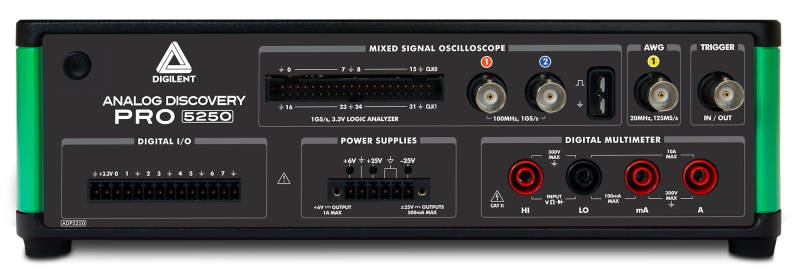
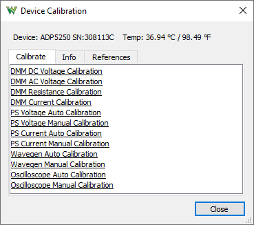
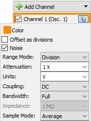
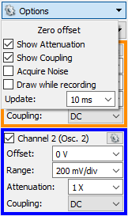

Getting started with the Analog Discovery Pro (ADP5250)
1. Hardware
To set up the ADP5250:
- First, install the Digilent WaveForms software on your PC. See Installer Details for more information.
- Connect the ADP5250 to your PC using a USB cable and supply 100-240VAC 100W max.

| | Recommended operating conditions | Absolute maximum ratings |
|---|
| Oscilloscope | inputs | ±40V 1MΩ|20pF | ±40V |
|---|
| Wavegen | outputs | ±12V 50Ω | ±12V |
|---|
| Digital | inputs | 0/5V 0-2Vthr | 0V to 5V |
|---|
| Digital | IOs | LVTTL 0/3.3V 4mA | TTL 0/5V |
|---|
| Trigger | IO | LVTTL 0/3.3V 4mA | TTL 0/5V |
|---|
| DMM | input | See DMM | 300V DC, 265V ACrms, 400V ACpeak |
|---|
| Power Supplies | output | +6V/1A +25V/500mA -25V/500mA | |
|---|
2. Software
See Installer Details for information about different command line options to install WaveForms.
See WaveForms for more information on using the WaveForms software.
3. Device Calibration
Each device is calibrated at the factory during the manufacturing test procedure. Calibration data is stored in the device's non-volatile memory.
The Calibrate tab lists the available calibration modules and can be used to launch them. The Info tab shows calibration data of the main modules. The References tab lets you review the last performed calibration steps.

- DMM DC Voltage Calibration: Requires the following reference DC voltages: -100 mV, 100 mV, -1 V, 1 V, -10 V, 10 V, -100 V, 100 V, -150 V, 150 V
- DMM AC Voltage Calibration: Requires the following 1kHz references: 5mṼ, 50mṼ, 100mṼ, 50mṼ, 500mṼ, 1Ṽ, 500mṼ, 5Ṽ, 10Ṽ, 5Ṽ, 50Ṽ, 100Ṽ, 7.5Ṽ, 75Ṽ, 150Ṽ
- DMM Resistance Calibration: Requires the following reference resistors: 0Ω, 1kΩ, 0Ω, 10kΩ, 0Ω, 100kΩ, 0Ω, 190kΩ, 0,Ω 1.9MΩ, 0Ω, 19MΩ
- DMM Current Calibration: Requires the following reference currents: -10mA, 0mA, 10mA, -100mA, 0mA, 100mA, -1A, 0A, 1A, -2.2A, 0A, 2.2A
- PS Voltage/Current Auto Calibration: The power supplies are calibrated automatically using the device DMM.
- PS Voltage/Current Manual Calibration: The power supplies are calibrated manually using external Volt and Current meter.
- Wavegen Auto Calibration: The FGen output auto calibration using the device DMM.
- Wavegen Manual Calibration: The FGen output manual calibration using external Voltmeter at the following steps:
- Offset Calibration w/o filter: Use 50Ω terminator and perform 22 measurements with Voltmeter at 1V DC range.
- Gain Calibration w/o filter: Perform 24 measurements with Voltmeter at 12V DC range or higher.
- Oscilloscope Auto Calibration: The Oscilloscope inputs auto calibration using the device FGen and PS/+25V outputs.
- Oscilloscope Manual Calibration: The Oscilloscope inputs manual calibration using external function generator. Steps for each channel:
- Adjust Offset Calibration: Automatic with BNC terminator
- Compensator Attenuation Calibration: Reference: 90mV 1kHz, 180mV 1kHz, 360mV 1kHz, 900mV 2kHz, 1.8V 2kHz, 3.6V 2kHz, 9V 2kHz, 18V 2kHz, 18V 2kHz
- Range Calibration: Reference: 47.5mV, 95mV, 190mV, 475mV, 950mV, 1.9V, 4.75V, 9.5V, 19V
- Offset DAC Calibration: Reference: -4.75V, -19V, 4.75V, 19V
4. Oscilloscope
The ADP5250 has 2 oscilloscope input channels.
Specifications:
- It has 8bit resolution 1GHz in single (when only one channel is enabled) or 500MHz in dual channel mode.
- The peak to peak ranges are the following: 100mV, 200mV, 400mV, 1V, 2V, 4V, 10V, 20V, 40V
- The offset is adjustable ±5V for 500mV or lower and ±20V for 1V or higher range
- The inputs have an impedance of 1MΩ | 20pF
- The -3dB bandwidth is 100MHz with 10X probe, width optional 20MHz filter
- The channels provide AC/DC coupling.
- The buffer depth is 1M samples / channel.
- The PowerFreq trigger source is derived from the mains 50/60Hz.
- For more information visit the Resource Center
The coupling, filter and other options can be selected under channel options in Scope, Spectrum, Network and Impedance Analyzers.

5. Function Generator
The ADP5250 is equipped with one FGen channel.
Specifications:
- The DAC is 14bits and 125MS/s +.
- The output impedance is 50Ω ±12V ~1.5mV resolution.
- It has optional 36MHz lowpass, 7-pole, elliptical filter.
- The signal buffer is 16Ki samples.
- For more information visit the Resource Center.
6. Power Supplies
The ADP5250 has three adjustable power supplies.
Specifications:
- +6V 0 to +6V and 0 to 1A
- +25V 0 to +25V and 0 to 500mA
- -25V 0 to -25V and 0 to 500mA
- The +25V and -25V supplies are isolated from the rest of the device having their own ground rail.
- For more information visit the Resource Center.
7. DMM
The ADP5250 has a DMM with 5½ digit resolution.
Specifications:
- DC voltage range: 100mV, 1V and 10V with 10GΩ or 10MΩ; 100V and 300V with 10MΩ
- AC voltage range: 100mṼ, 1Ṽ, 10Ṽ, 100Ṽ and 265Ṽ
- DC current range: 10mA, 100mA, 1A and 10A*
* 30 seconds on, 30 seconds off. After measuring >5 A, wait two minutes to get full accuracy in the 1 A range.
- AC current range: 5mA, 50mA, 500mA and 5A
- Resistance range: 100Ω, 1kΩ, 10kΩ, 100kΩ, 1MΩ, 10MΩ, 100MΩ
- Continuity range is 100Ω
- Diode test range is 2V
- For more information visit the Resource Center.
8. Digital I/O
The ADP5250 has 16 digital I/Os (DIO 0-15) and 32 digital inputs (DIN 0-31).
Specifications:
- The DINs input logic threshold can be adjusted in the Logic Analyzer interface.
- The input impedance is 100 kΩ || 7.5 pF pulled to -2.0 V to +6.5 V depending on input threshold setting.
- The Logic Analyzer buffer is 4KiS to 1M samples, depending on signal activity.
- For this device the Logic Analyzer and Scope usage is exclusive. To use both at the same time add Digital signals in Oscilloscope.
- The Protocol tool supports SPI and I2C functions in Master and Custom modes with 8, 16, 24 and 32 bits.
- The DIOs are 0/3.3V output and 5V compatible input.
- The signal drive strength is 4mA.
- The external power 3.3V output can provide up to 20mA.